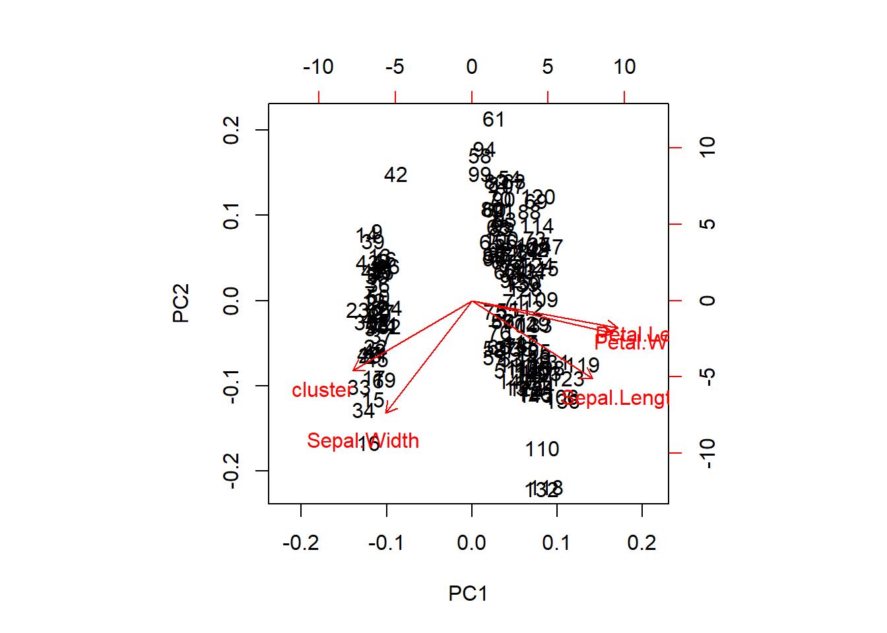

Principal Component Analysis
Finds structure in features and aid in visualization
- Find linear combination of variables to create principal components
- Maintain most variance in the data (first component has largest possible variance)
- Principal components are uncorrelated -> orthogonal
- Resulting vectors are an uncorrelated orthogonal basis set
Same as eigenvalue decomposition of \(X^TX\) (covariance matrix) and singular value decomposition of \(X\). Important to normalize data first, especially if input variables use different units of measurement or the input variables have significantly different variances.
- First principal component is equal to eigenvector with largest eigenvalue
Iris Example
PCA function
pca.iris = prcomp(x=iris[-5], scale=T, center=T)Which predictors contribute to which principal components
pca.iris$rotation## PC1 PC2 PC3 PC4 PC5
## Sepal.Length 0.5338256 -0.19269369 0.1591462 -0.75077244 0.29818224
## Sepal.Width -0.2100117 -0.69075550 0.6719121 0.12983301 -0.10212486
## Petal.Length 0.5641321 0.11305340 0.1542496 0.08768809 -0.79843082
## Petal.Width 0.5515446 0.08050033 0.2130322 0.61932524 0.51026639
## cluster -0.2201793 0.68298214 0.6738182 -0.16802134 0.05286116Sepal.Width has little contribution to PC1 but almost all of PC2
Visualization
Visualizing first two components
biplot(pca.iris)
Petal.Width and Petal.Length are in the same direction indicated they are correlated in the original data
pca.iris.var = pca.iris$sdev^2
pve = pca.iris.var/sum(pca.iris.var) #proportion of variance explained
plot(pve, xlab = 'Principal Component', ylab = 'Proportion of Variance Explained', main='Scree Plot', ylim=c(0,1), type="b")
First principal component explains the most variance, explained variance decreases for later principal components